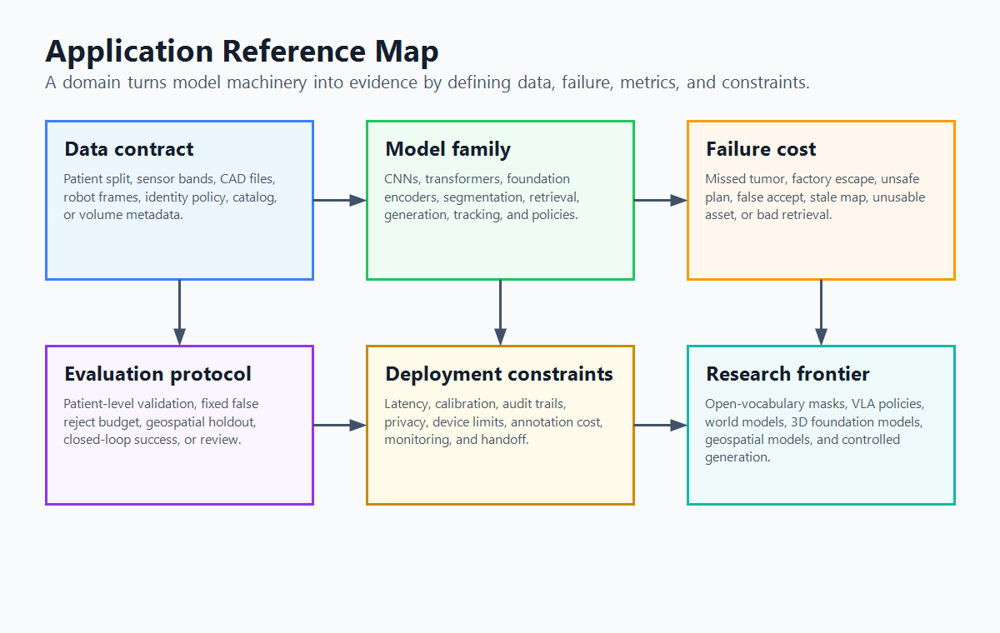

"I asked for one map and got ten. Apparently every application believes it is the center of computer vision, and after reading their evaluation protocols, I regret to report that each one has a point."
A Cartographer of Very Opinionated Pipelines
The chapters teach the machinery; this appendix tells you how that machinery changes when it enters a domain. A tumor segmenter, a warehouse robot, a satellite land-cover model, and a product-search engine may all use convolution, attention, masks, embeddings, and deployment tricks. They stop being the same project the moment you ask what counts as data, what counts as a failure, what metric can be trusted, and which constraints the model is not allowed to violate. This appendix maps ten application families onto the book's core chapters and adds the domain-specific knowledge a researcher or developer needs before treating the book as a main reference.
To use this appendix, start with Figure G.1 as the application lens, then find your application in Table G.1, follow the chapter path, and read the matching domain playbook. Section 2 covers medical imaging and microscopy; Section 3 covers autonomous driving and robotics; Section 4 covers industrial inspection; Section 5 covers Earth observation and biometrics; Section 6 covers spatial computing, creative AI, document intelligence, retail, and visual search. The tables show the first data formats to learn, the usual starting methods, the benchmarks that define the literature, and the metrics that matter after the demo works. The playbooks then add the details that turn a chapter path into domain practice.

The main error when moving from general computer vision to an application is assuming the model family defines the field. It usually does not. The field is defined by the data contract, the failure cost, and the evaluation protocol. A segmentation model in Chapter 24 becomes a medical device when the split is patient-level and the output guides treatment; the same architecture becomes an inspection tool when the metric is escape rate at a fixed false reject budget; it becomes an Earth-observation system when pixels are tied to a coordinate reference system and a sensor bandpass.
1. Pick Your Application Path Reference
Table G.1 gives the short version: the application, representative systems, book chapters to treat as required reading, the domain additions that are not fully covered elsewhere, and the benchmarks or protocols that make a claim credible. The rows are ranked by how naturally the current book already supports the application, not by market size. Rows near the top require fewer chapters outside this book and fewer domain-specific standards before a credible project can begin. After this map, the appendix changes from ranking order to teaching order. Sections 2 through 6 group domains by the contract a builder must learn first: regulated instrument data, closed-loop action, factory inspection, governed identity or geography, and product-facing multimodal systems.
| Acronym | Meaning |
|---|---|
| BEV | Bird's-eye view, a top-down coordinate representation used by planners |
| VLA | Vision-language-action, a policy family that maps images and instructions to robot actions |
| VLM | Vision-language model |
| OCR | Optical character recognition |
| ReID | Person re-identification |
| SAR | Synthetic-aperture radar |
| EO | Earth observation |
| CRS | Coordinate reference system |
| LiDAR | Light detection and ranging |
| IMU | Inertial measurement unit |
| RGB-D | Color plus depth imagery |
| SfM | Structure from motion |
| SLAM | Simultaneous localization and mapping |
| NeRF | Neural radiance field |
| PSF | Point spread function |
| Acronym | Meaning |
|---|---|
| AP | Average precision |
| mIoU | Mean intersection over union |
| AUROC | Area under the receiver operating characteristic curve |
| PRO | Per-region overlap |
| NDS | nuScenes detection score |
| FAR, FRR | False accept and false reject rates |
| FNIR, FPIR | Identification miss and false-positive rates |
| HOTA | Higher-order tracking accuracy |
| Application | Specific systems | Learning path through the book | Domain additions | Benchmarks and metrics |
|---|---|---|---|---|
| Industrial inspection and quality control | PCB defect detection, weld inspection, surface scratch inspection, pharmaceutical package verification | Start with Ch. 1, 3, 6, and 7 for image formation, measurement, morphology, and restoration; then Ch. 21, 23, and 24 for supervised baselines; then Ch. 25 and 28 for foundation features and deployment; finish with Ch. 37 and the capstone for evaluation, synthetic data, and operating thresholds. | Lighting design, line-scan cameras, anomaly detection, per-SKU drift, escape-rate accounting | MVTec AD, MVTec AD 2, VisA, BTAD, DAGM, KolektorSDD; image AUROC, pixel AUROC, PRO, false reject rate, escape rate |
| AR, 3D reconstruction, and spatial computing | Room scanning, AR anchoring, Gaussian-splat capture, digital twins, photogrammetry services | Start with Ch. 5 and 10 for coordinates, features, and motion cues; then Ch. 12 to 15 for cameras, calibration, stereo, SfM, SLAM, and tracking; then Ch. 27 for neural depth and 3D scenes; finish with Ch. 28 and 36 for deployable spatial systems and generated worlds. | ARKit and ARCore constraints, relocalization, feed-forward 3D, splat compression, spatial asset formats | ETH3D, Tanks and Temples, ScanNet, DTU, CO3D; pose error, depth error, Chamfer distance, PSNR, rendering FPS |
| Creative AI and generative media | Text-to-image apps, controlled editing, brand asset generation, video generation, synthetic-data studios | Start with Ch. 30 to 32 for generative modeling foundations; then Ch. 33 to 36 for diffusion, control, video, and 3D generation; finish with Ch. 37 and 38 for evaluation, safety, provenance, cost, and production workflows. | Prompt suites, identity preservation, edit locality, provenance, cost per accepted asset, workflow orchestration | GenEval, DPG-Bench, T2I-CompBench, PartiPrompts, VBench, FID, CLIPScore, human preference, edit-locality scores |
| Robotics and embodied AI | Warehouse picking, visual navigation, drone inspection, humanoid manipulation, mobile service robots | Start with Ch. 12 to 15 for calibration, depth, SLAM, and tracking; then Ch. 23 to 25 for detection, segmentation, and representation learning; then Ch. 26 to 28 for temporal models, 3D perception, and deployment; finish with Ch. 36 and Appendix E for world models and agentic workflows. | Robot actions, proprioception, teleoperation data, VLA policies, sim-to-real, hand-eye calibration | Open X-Embodiment, RLBench, RoboMimic, ManiSkill, LIBERO; task success, recovery rate, latency, safety intervention rate |
| Autonomous vehicles and ADAS | Multi-camera perception, lane and curb detection, occupancy prediction, driver monitoring, scenario simulation | Start with Ch. 12 to 15 for calibrated multi-camera geometry, stereo, SLAM, and tracking; then Ch. 23, 24, 26, and 27 for detection, segmentation, temporal perception, and 3D scene models; finish with Ch. 28, 36, and 37 for deployment, simulation, world models, and planning-facing evaluation. | BEV fusion, occupancy forecasting, radar and LiDAR fusion, planning-facing metrics, closed-loop simulation | KITTI, Cityscapes, BDD100K, nuScenes, Waymo, Argoverse, OpenLane, Occ3D-style sets; NDS, 3D AP, occupancy mIoU, collision rate |
| Medical imaging AI | CT organ segmentation, MRI tumor segmentation, chest X-ray triage, retinal analysis, pathology slide analysis | Start with Ch. 1 and 7 for acquisition, intensity, restoration, and enhancement; then Appendix B for dataset leakage and benchmark protocol; then Ch. 21, 23, and 24 for classifiers, detectors, and segmenters; finish with Ch. 25, 28, and 37 for medical foundation models, deployment constraints, calibration, and clinical validation. | DICOM and NIfTI, voxel spacing, 3D volumes, whole-slide images, clinical validation, medical foundation models | BraTS, MSD, KiTS, CheXpert, MIMIC-CXR, CAMELYON, TCGA; Dice, Hausdorff distance, calibration, patient-level AUROC |
| Scientific imaging and computational microscopy | Cell segmentation, particle tracking, fluorescence denoising, microscopy super-resolution, material microstructure analysis | Start with Ch. 1, 3, 6, and 7 for acquisition physics, filtering, morphology, restoration, and measurement; then Ch. 15, 21, and 24 for tracking, classification, and segmentation; finish with Ch. 25 and 37 for foundation features, validation, and biological endpoint evaluation. | PSF, the point spread function that describes optical blur; z-stacks, image slices captured at different depths; anisotropy, unequal spacing or resolution across axes; photobleaching, signal loss from repeated illumination; lab batch effects; biological endpoint validation | BBBC, Cell Tracking Challenge, TissueNet, LIVECell, MoNuSeg; object F1, lineage accuracy, count error, PSNR, SSIM |
| Document, retail, and visual search systems | Invoice extraction, OCR cleanup, product recognition, visual product search, fashion recommendation | Start with Ch. 2 to 7 for image cleanup, geometry, morphology, and restoration; then Ch. 16, 21, and 22 for OCR-adjacent recognition, classifiers, and transformers; then Ch. 25 and 29 for embeddings, VLMs, retrieval, and multimodal reasoning; finish with Ch. 28 and 37 for serving, evaluation, A/B tests, and human correction loops. | Layout-aware VLMs, OCR-free models, vector search, hard-negative mining, catalog metadata, A/B tests | FUNSD, DocVQA, RVL-CDIP, PubTables-1M, DeepFashion, Product1M; field F1, table F1, recall@k, nDCG, conversion lift |
| Security, biometrics, and surveillance analytics | Face verification, liveness detection, person re-identification, multi-camera tracking, license plate recognition | Start with Ch. 15 and 16 for tracking, matching, and classical recognition; then Ch. 21, 23, 25, and 26 for classifiers, detectors, embeddings, ReID, and temporal analytics; finish with Ch. 28 and 37 for deployment, threshold selection, demographic analysis, privacy, and monitoring. | Biometric operating points, presentation attacks, demographic differentials, consent, retention, privacy-preserving ReID | NIST FRTE, IJB-C, LFW, MegaFace, Market-1501, MSMT17, MOTChallenge; FAR, FRR, FNIR, FPIR, IDF1, HOTA |
| Remote sensing and Earth observation | Crop monitoring, wildfire detection, flood mapping, building extraction, land-cover classification, change detection | Start with Ch. 1, 5, and 7 for sensors, coordinates, preprocessing, and restoration; then Ch. 21, 22, 24, and 26 for classification, transformers, segmentation, and temporal change; finish with Ch. 25, 28, and 37 for EO foundation models, geospatial deployment, spatial holdouts, and area-aware metrics. | Multispectral imagery, SAR, coordinate reference systems, tiling, cloud masks, temporal data cubes, EO foundation models | BigEarthNet, SpaceNet, xView, SEN12MS, DynamicEarthNet, GEO-Bench; mIoU, F1, area error, temporal consistency, geolocation error |
Pick one row in Table G.1, then fill four slots before checking the answer: first chapters, domain additions, benchmark, and trust metric. Repeat with a second row and compare how the data contract changes the plan.
Check: A medical segmentation route should include acquisition and restoration chapters, Appendix B, segmentation and foundation-model chapters, DICOM or NIfTI handling, patient-level splitting, and Dice plus Hausdorff or calibration. An industrial inspection route should include morphology, restoration, detection or segmentation, anomaly detection, MVTec or VisA, and escape rate at a fixed false reject rate.
Use the rows as a routing table. Medical imaging and microscopy continue in Section 2; driving and robotics continue in Section 3; industrial inspection continues in Section 4; Earth observation, biometrics, and security continue in Section 5; spatial computing, creative AI, documents, retail, and visual search continue in Section 6. After the matching domain playbook, read Sections 7 and 8 to choose metrics and tools, then Section 9 to translate the domain into a capstone variant.
A U-Net-style segmenter can be the right starting point for liver segmentation, solder-mask defect detection, and flood mapping. In the medical project, the first week is spent on voxel spacing, windowing, and patient-level splits. In the factory project, it is spent on lighting, false reject budgets, and collecting defect-free parts. In the flood project, it is spent on cloud masks, coordinate systems, and matching before-and-after satellite passes. The architecture is shared; the competence is not.
The reason is that each domain changes the nuisance variables and the failure surface. In medicine, scanner settings and patient anatomy can masquerade as pathology; in factories, lighting and fixture geometry decide whether a defect is visible; in flood mapping, registration and clouds can create false change. Domain expertise is the work of separating the visual signal the model should learn from the acquisition artifacts it should ignore.
2. Medical Imaging and Computational Microscopy Advanced
Medical imaging and microscopy are grouped here because both punish natural-image assumptions. Their pixels come from physical instruments, their labels are expensive, and their final claims are about bodies, cells, tissues, or materials rather than pixels alone. The core methods live in Chapter 7 for restoration, Chapter 24 for segmentation, and Chapter 25 for foundation models. The domain additions below tell you what changes before those methods become credible research tools.
| Data type | First thing to check | Common model shape | Main evaluation trap |
|---|---|---|---|
| CT volume | Hounsfield units, spacing, slice thickness, reconstruction kernel | 2.5D or 3D segmentation, detection, or triage model | Mixing slices from the same patient across train and test |
| MRI volume | Sequence, orientation, bias field, scanner site, voxel spacing | Multi-channel 3D segmentation or registration model | Assuming intensity values are calibrated like CT |
| Chest X-ray | Projection, portable versus fixed device, label provenance | Multi-label classifier or report-grounded VLM | Learning hospital, device, or acquisition shortcuts |
| Whole-slide pathology | Magnification, stain, scanner, gigapixel tiling strategy | Patch encoder plus multiple-instance learner | Evaluating patch labels when the clinical label is slide-level |
| Fluorescence microscopy | Channel identity, PSF, exposure, z-spacing, photobleaching | Restoration, segmentation, tracking, or measurement pipeline | Optimizing pixel metrics while damaging biological measurements |
Medical imaging: validation before architecture
The research frontier is moving from one-off segmentation networks toward promptable and domain-adapted foundation models, but the scientific question is not whether the model name is new. It is whether the validation protocol respects the instrument and the patient, specimen, or slide. SAM 2 (Ravi et al., 2024) made streaming memory central to promptable image and video segmentation; Medical SAM 2 (Zhu et al., 2024) and MedSAM2 (Ma et al., 2025) ask how that interaction changes for volumes and lesions; Segment Anything for Microscopy (Archit et al., 2024) and FluoResFM (Nature Communications, 2026) show the same pressure in bioimage segmentation and restoration. The open question for readers is how to validate promptable models when the prompts, annotator habits, scanner settings, and biological endpoint all affect the reported result.
A leading medical-imaging paper usually starts with a familiar architecture and wins or loses on validation design. For patient-derived medical data, a split by image, slice, or patch is usually invalid when samples from the same patient can cross sets. A credible split is patient-level; stronger external validation often holds out acquisition sites, scanner families, or both, depending on the deployment claim. This is the medical version of the dataset-contamination warning in Appendix B. The model should be evaluated not only with Dice or AUROC but also with calibration, uncertainty, clinically meaningful thresholds, and reader-study design when the output enters diagnosis or treatment planning.
Leakage is not only duplicate files. Adjacent CT slices share anatomy, pathology, scanner noise, and reconstruction settings, so a model can recognize the patient context without learning the disease boundary. Patch-level splits in pathology have the same problem: tiles from one slide inherit stain, scanner, and tissue-preparation signatures. Patient-level and site-level splits force the model to solve the clinical task under new acquisition conditions.
Dice can flatter a bad medical model. A tumor mask can achieve a respectable Dice score while missing a small invasive component that matters clinically, and a vessel segmentation can look good by area while breaking topology. Pair overlap metrics with boundary metrics such as Hausdorff distance, object-level sensitivity, calibration, site-shift analysis, and, whenever possible, a task-level endpoint. For microscopy, measure the biological quantity the scientist actually needs: count, lineage, morphology, or intensity trend.
Dice is area-weighted, so large easy regions can hide small clinically decisive errors. Hausdorff distance asks a different question: how far apart are the worst boundary points? Object-level sensitivity asks whether each lesion, vessel branch, or cell was found at all. The metric set should match the decision: dose planning needs boundaries, screening needs sensitivity at a threshold, and microscopy often needs counts or trajectories.
Microscopy: measurement before pixel score
Picture a fluorescence time-lapse experiment as a measurement instrument, not just an image sequence. If a denoiser makes cells look smoother but shifts their intensity trend, the biological conclusion can change even when PSNR improves. A useful first check is concrete: count the same 200 cells before and after restoration, compare lineage breaks, and verify that the treatment-control intensity ratio moves less than the biological effect being claimed.
Do not start a medical-imaging project by writing DICOM and volume preprocessing from scratch. MONAI, SimpleITK, TorchIO, and pydicom replace hundreds of brittle lines with tested loaders, transforms, spacing-aware resampling, and medical-specific augmentations. In microscopy, napari, Cellpose, StarDist, ilastik, bioimage.io, and Segment Anything for Microscopy provide the same practical bridge from raw images to reproducible analysis.
3. Autonomous Driving, Robotics, and Embodied AI Advanced
Driving and robotics share the central pressure that a perception model must close a loop. A detector that is slow, unstable, or badly calibrated is not merely inaccurate; it changes the controller's behavior. The geometry stack of Chapter 12 through Chapter 14, the detection and segmentation stack of Chapter 23 and Chapter 24, and the world-model material of Chapter 36 are the minimum path. The domain addition is the control interface.
| Layer | Autonomous driving version | Robotics version | Typical failure |
|---|---|---|---|
| Sensor model | Multi-camera rig with LiDAR, radar, GPS, IMU, maps | RGB-D, wrist camera, force or tactile sensors, joint states | Calibration or time synchronization drift |
| Representation | Bird's-eye view grid, occupancy, lanes, tracks, future agents | Object poses, affordances, grasp points, scene graph, latent policy state | Representation misses what the planner needs |
| Learning target | Detection, occupancy, forecasting, trajectory planning | Imitation action, policy chunk, visual servoing command | Good perception score but poor closed-loop behavior |
| Evaluation | 3D AP, NDS, occupancy mIoU, collision rate, route completion | Task success, recovery, intervention rate, time to completion | Offline benchmark hides interactive failures |
Driving: perception in planner coordinates
Autonomous-driving research is moving from isolated perception heads toward world models and planning-facing representations. Recent surveys organize driving world models around future physical-world generation, behavior planning, and prediction-planning interaction (Feng et al., 2025). Robotics has a parallel shift from perception modules to vision-language-action policies: examples include open VLA policies, action-chunking policies, and robot foundation models that map images, language, robot state, and action history into action sequences, often bootstrapped from robot demonstration data rather than task-specific labels.
For autonomous driving, the representation that changed the stack is the bird's-eye view grid. Image features from several cameras are lifted into 3D or depth-conditioned space, splatted into a ground-plane or voxel representation, fused over time, and decoded into lanes, boxes, occupancy, or future motion. BEV is not just an implementation detail; it aligns perception with planning. A pedestrian box in image coordinates asks the planner to reason through projection; an occupied cell in ego coordinates can be consumed directly by a cost map. That is why occupancy forecasting and 4D scene prediction now sit next to detection in frontier driving papers.
BEV also changes which calibration errors matter. A one-degree camera pitch error may be visually subtle in the image but can move projected objects meters away on the ground plane. Temporal fusion then compounds the mistake because stale or misregistered cells look like motion. That is why BEV systems need calibration checks, timestamp alignment, and ego-motion compensation as part of evaluation, not as preprocessing trivia.
A vehicle detector improves 3D AP by two points by recovering faraway parked cars. The planner's collision rate does not move. A second detector improves AP by one point but stabilizes nearby pedestrian tracks through brief occlusion and reduces hard braking. Which model should the driving team choose, and what metric explains the choice?
Answer sketch: Choose the second model because the deployment objective is closed-loop safety, not AP alone. Collision rate, hard-braking frequency, track stability near the ego vehicle, and planning-facing failure review are more relevant than far-field AP gains. The same logic appears in robotics: a segmentation model with lower mIoU can win if it gives the gripper a stable contact boundary.
Robotics: perception in action coordinates
For robotics, the newest question is how much of the old perception stack to keep. The aha is that a robot does not need the prettiest mask; it needs the mask that makes the next action stable. A segmentation model with slightly lower mIoU can be the better robot model if its boundary gives the gripper a repeatable contact patch, while a higher-mIoU model can fail if its mask flickers frame to frame. A VLA policy may learn a more direct mapping from observations and instructions to actions, but it inherits new burdens: action-space definition, teleoperation data quality, proprioception, latency, recovery behavior, and simulation-to-real transfer. Treat VLA policies as a new layer above the perception chapters, not a replacement for understanding them.
4. Industrial Inspection and Quality Control Intermediate
Industrial inspection is the application for which the book is closest to complete. The capstone already asks the reader to build a defect-inspection system, and the necessary tools span morphology, restoration, detection, segmentation, and synthetic data. What the core chapters do not fully spell out is the anomaly-detection research line and the factory metric contract.
| Family | Assumption | Representative methods | When it wins |
|---|---|---|---|
| Reconstruction | Normal images reconstruct well, anomalies do not | Autoencoders, VAEs, diffusion reconstruction | Simple textures and defects that cannot be faithfully reconstructed |
| Feature memory | Normal patches form a compact feature bank | PaDiM, PatchCore, kNN over pretrained features | Few or no defect examples, stable product appearance |
| Flow and density | Normal features have learnable likelihood | FastFlow, normalizing-flow variants | When calibrated anomaly scores matter |
| Vision-language | Text prompts and foundation features describe normality or defects | WinCLIP, training-free VLM anomaly detection | Many product types, few labeled defects, fast onboarding |
| 3D anomaly detection | Shape defects matter as much as appearance | Point-cloud and RGB-D anomaly models | Machined parts, molded goods, metrology-heavy inspection |
The 2024 to 2026 anomaly-detection frontier is expanding beyond the classic single-product, normal-only benchmark setting. Recent industrial anomaly surveys emphasize training-free foundation features, few-shot sampling, diffusion-based synthetic anomalies, VLM-guided detection, and 3D point-cloud anomaly detection (Awesome Industrial Anomaly Detection; survey, 2025). MVTec AD remains the starter benchmark, while MVTec AD 2 and VisA-style datasets better reflect multi-object and higher-variance deployments.
The factory metric shift is severe. Academic anomaly detection often reports image AUROC and pixel AUROC. A quality engineer asks a different question: at the false reject rate the line can tolerate, what fraction of dangerous defects escape? That means evaluation should report operating points, not just ranking quality. A model that improves AUROC by smoothing easy cases but misses one rare safety-critical crack is worse than a noisy model that catches every dangerous crack and sends more parts to human review.
AUROC is useful, but the conveyor belt is not grading on a curve. It wants to know whether the cracked part went into the customer box.
The operating point should be chosen from the production constraint, not from the prettiest ROC curve. If the line can send 2 percent of parts to manual review, fix the false reject rate at 2 percent and measure how many true defects still escape. Then stratify that escape rate by SKU, defect type, lighting station, and lot, because a single average can hide the exact rare crack the inspection system exists to catch.
In industrial vision, optics are part of the model. A telecentric lens, controlled illumination, a polarizer, or a line-scan camera can remove variability that no amount of augmentation should be asked to learn. The "Right Tool" principle therefore starts before Python: spend the first improvement dollar on the imaging geometry if it turns the problem from "recognize a subtle defect under arbitrary shadows" into "threshold a stable contrast pattern."
5. Earth Observation, Biometrics, and Security Advanced
Earth observation and biometrics look unrelated, but both are governed by domain contracts that generic vision papers often understate. Earth observation ties pixels to a place, a time, a sensor band, and a coordinate reference system. Biometrics ties pixels to identity, consent, demographic fairness, and operating thresholds. A researcher who ignores either contract can still train a model, but cannot make a trustworthy claim.
| Domain | Data model | Core additions to the book | Credibility checks |
|---|---|---|---|
| Earth observation | Georeferenced raster, multispectral bands, SAR, temporal stack, cloud mask | CRS, reprojection, tiling, band normalization, temporal change, EO foundation models | Geographic holdout, season holdout, sensor transfer, area-weighted metrics |
| Biometrics and surveillance | Face or body embedding, identity gallery, camera network, event log | Verification versus identification, liveness, ReID protocols, demographic analysis, privacy governance | FAR, FRR, FNIR, FPIR, threshold policy, demographic differentials, retention policy |
Earth observation: pixels tied to place and time
Earth observation now has its own foundation-model ecosystem. NASA and IBM's Prithvi-EO 2.0 is an open geospatial foundation model trained on global Harmonized Landsat and Sentinel-2 time series at 30 m resolution (IBM Research, 2025), and DINOv3 includes a satellite-imagery variant (Meta AI, 2025). These models reuse transformer ideas from Chapter 22, but their inputs are geospatial data cubes, not ordinary photographs.
An Earth-observation pipeline should begin with the raster metadata. Coordinate reference system, affine transform, spatial resolution, band ordering, acquisition time, solar angle, and cloud mask are not side information; they are part of the sample. A flood map that is shifted by a few pixels is not a slightly worse segmentation. It is an incorrect map. A land-cover classifier that performs well in one climate and fails in another is not robust just because its random split was balanced. Geographic and temporal holdouts are the Earth-observation version of patient-level splits.
In Earth observation, an example is not just an image tensor and a label mask. It is an image tensor plus a map projection, ground sample distance, sensor bandpass, acquisition date, sun geometry, and sometimes atmospheric correction state. Two tensors with the same pixel values can mean different physical reflectance if they came from different sensors or seasons. That is why normalization, reprojection, and temporal matching are part of the scientific claim.
Never evaluate geospatial models only by random tile splits when adjacent tiles from the same scene can land in train and test. The model may learn a location, season, or sensor artifact rather than the phenomenon. Use spatial blocks, country or biome holdouts, time-separated evaluation, and area-aware metrics when the deployment claim is geographic generalization.
Biometrics: pixels tied to identity and governance
Biometrics has the opposite problem: the data can look deceptively ordinary, but the deployment context is sensitive. Face verification compares one claimed identity against one template; identification searches a gallery; person re-identification links appearances across cameras without necessarily naming the person. These are different tasks with different risk profiles. Accuracy is not a sufficient metric. Systems are chosen at an operating threshold: false accept rate, false reject rate, false positive identification rate, and false negative identification rate define the cost tradeoff, and demographic differentials must be reported when identity or access is at stake.
The metric names encode different search problems. FAR and FRR belong to verification, where the system accepts or rejects one claimed identity. FPIR and FNIR belong to identification, where the system searches a gallery and may accuse the wrong person or miss the right one. A threshold that is acceptable for unlocking a phone can be unacceptable for public-space identification because the number of comparisons and the harm of a false candidate are different.
A phone-unlock face model can tolerate a false reject by asking for a passcode; a border-control identification system cannot treat false accepts, false alarms, and demographic error gaps as minor nuisances. The same embedding architecture may appear in both systems, but the evaluation protocol and governance burden are different enough that they should be designed as separate products. The open research problem is how to measure identity systems under realistic gallery size, demographic variation, presentation attacks, and privacy constraints without turning evaluation itself into a new surveillance dataset.
6. Spatial Computing, Creative AI, Documents, Retail, and Search Intermediate
The remaining application families are unified by one production pattern: they combine perception, generation, retrieval, and interaction. Spatial capture turns camera geometry into a navigable asset. Creative tools turn generative models into controllable workflows. Document and retail systems turn images into structured data or embeddings that a user can search. In each case, a single model is rarely the product.
| System | Pipeline skeleton | Frontier methods | Operational metric |
|---|---|---|---|
| Spatial capture | Capture, estimate poses, reconstruct points or splats, compress, stream, relocalize | DUSt3R, MASt3R, VGGT, pose-free Gaussian splatting | Capture success, pose drift, visual quality, frame rate, asset size |
| Creative generation | Prompt or reference, generate, control, edit, verify, provenance, approve | Diffusion transformers, flow matching, FLUX.1 Kontext, video diffusion | Accepted asset cost, instruction adherence, edit locality, identity preservation |
| Document intelligence | Image cleanup, OCR or VLM reading, layout reasoning, extraction, validation | LayoutLM lineage, Donut, DocVLM, OCR-augmented VLMs | Field-level F1, table F1, human correction rate, latency |
| Retail visual search | Image encoder, text encoder, metadata fusion, vector index, re-ranker, A/B test | CLIP, SigLIP, ecommerce-specific embedding models | Recall@k, nDCG, click-through, conversion, catalog drift |
Spatial computing
Feed-forward 3D reconstruction is collapsing pieces of the classical SfM pipeline into one model. VGGT predicts camera parameters, point maps, depth maps, and tracks from one to many views in under a second (Wang et al., 2025), while DUSt3R (Wang et al., 2023) and MASt3R (Leroy et al., 2024) move multi-view geometry toward feed-forward reconstruction and matching from uncalibrated or weakly posed image collections. The research question is where learned geometry should stop and explicit consistency checks should begin.
Product-facing multimodal systems have a parallel frontier. FLUX.1 Kontext unifies image generation and editing with text and image context (Batifol et al., 2025), while DocVLM adds OCR-derived layout and text signals to a VLM without discarding visual context (Nacson et al., CVPR 2025). The common open problem is evaluation: these systems must be judged by edit locality, layout fidelity, retrieval quality, and human correction cost, not only by image similarity or benchmark accuracy.
Spatial computing is where the old and new geometry chapters meet most cleanly. The reveal is that the same phone video can become three different products depending on the representation: a point cloud for measurement, a Gaussian splat for fast photorealistic viewing, or a mesh for editing and collision. The classical route uses calibrated cameras, feature matching, SfM, multi-view stereo, and a mesh or point cloud. The neural route may use NeRF, 3D Gaussian splatting, or a feed-forward geometry transformer. The production route usually mixes them: learned geometry bootstraps or repairs the capture, classical optimization enforces consistency when precision matters, and a real-time rendering representation carries the result to a phone or headset. That is why Chapter 14 and Chapter 27 should be read together.
Creative generation
Creative AI has a different metric problem. FID and CLIPScore help compare models, but product teams need accepted-asset cost. That metric includes prompt retries, failed generations, human edits, safety-filter rejections, latency, and whether brand identity stayed intact. A model with slightly worse public benchmark numbers can be better if it follows instructions reliably, preserves a product's shape, and costs less per approved output. This is the practical form of the evaluation lessons in Chapter 37.
Accepted-asset cost should be measured as a workflow metric: total generation cost plus review time plus edit time divided by the number of assets that pass the final use gate. A model that generates beautiful images but needs ten retries per usable product shot can lose to a less glamorous model that obeys layout, brand, and object-identity constraints on the first or second attempt. This metric turns subjective quality into a production constraint the team can optimize.
Documents, retail, and visual search
For document and retail systems with large catalogs, filtered retrieval, or latency targets, vector infrastructure is usually the right tool; small prototypes can still start with a simple embedding search. A product-search request becomes a match against compressed visual fingerprints: the query image becomes one embedding, the catalog becomes stored embeddings, and the index retrieves candidates before metadata filters and a re-ranker clean up the result. A hand-written nearest-neighbor loop is useful for learning embeddings in Chapter 25, but production search should move quickly to FAISS, Milvus, Elasticsearch, OpenSearch, or a managed vector service.
For document AI, OCR-free does not mean OCR is obsolete. Many strong systems still combine OCR, layout signals, and visual tokens, then evaluate extracted fields rather than page images alone.
7. Metric Shifts by Domain Intermediate
Before you trust a result table, ask what the application would punish. The table below is a compact checklist for the moment a general computer vision metric stops being enough. Use it before writing an abstract, building a results table, or choosing a capstone variant.
| Domain | Generic metric | Domain metric to add | Reason |
|---|---|---|---|
| Medical imaging | Dice, AUROC | Hausdorff distance, calibration, patient-level sensitivity, site holdout | Clinical decisions depend on boundaries, thresholds, and generalization |
| Autonomous driving | 2D AP, mIoU | 3D AP, occupancy mIoU, collision rate, route completion | Planning consumes geometry and future risk, not image labels alone |
| Robotics | Detection AP, segmentation mIoU | Task success, intervention rate, recovery success, latency | Closed-loop action exposes failures hidden offline |
| Industrial inspection | AUROC | Escape rate at fixed false reject rate, PRO, per-SKU drift | Ranking quality is not enough when dangerous defects must not pass |
| Earth observation | mIoU, F1 | Area error, geolocation error, temporal consistency, spatial holdout | Predictions are maps tied to place and time |
| Biometrics | Accuracy | FAR, FRR, FNIR, FPIR, demographic differentials | Operating thresholds and identity harms define deployment risk |
| Spatial computing | Depth error, PSNR | Pose drift, relocalization success, frame rate, asset size, user-scale error | Interactive spatial products punish unstable geometry and heavy assets, not only reconstruction quality |
| Creative generation | FID, CLIPScore | Instruction adherence, edit locality, identity preservation, accepted-asset cost | Users care about controllable outputs, not only distribution similarity |
| Document AI | Page accuracy | Field-level F1, table F1, human correction rate | Structured extraction fails at the field level |
| Visual search | Classification top-1 | Recall@k, nDCG, click-through, conversion lift | Search is ranked retrieval under catalog and user-intent drift |
| Microscopy | Pixel Dice, PSNR | Object F1, count error, lineage accuracy, biological endpoint preservation | The scientific claim is about measured biology, not only image quality |
The pattern is stricter than a metric swap: generic and domain metrics should be co-computed on the same panel, model, split, and seed, then saved as one artifact so the comparison is defensible. Code Fragment 1 grounds the distinction with an inspection threshold: the generic score changes smoothly, but the domain decision depends on escape rate at a fixed false reject budget.
# Computes the inspection operating point from defect scores.
# The threshold is chosen to respect the false reject budget first.
import numpy as np
good_part_scores = np.array([0.02, 0.04, 0.07, 0.08, 0.10])
defect_scores = np.array([0.35, 0.62, 0.74, 0.91, 0.96])
threshold = np.quantile(good_part_scores, 0.80)
false_reject_rate = np.mean(good_part_scores > threshold)
escape_rate = np.mean(defect_scores <= threshold)
print(f"threshold={threshold:.2f}")
print(f"false_reject_rate={false_reject_rate:.2f}")
print(f"escape_rate={escape_rate:.2f}")false_reject_rate and escape_rate make the domain metric concrete.When both generic and domain metrics appear in a paper, first check that the compared numbers come from the same evaluation run; then use the domain metric to interpret whether the result matters in the application. The aha from Code Fragment 1 is that the threshold is not a model-score detail; it is the business rule translated into code. Once the false reject budget fixes the threshold, escape rate becomes the number that decides whether the system can ship.
8. Tools of the Trade by Application Beginner
The book's tools chapters teach the general stack. Table G.8 adds the domain packages that a practical team should know before reinventing utilities that the community already maintains. Skim this table only after choosing a domain; it is a shortcut list, not a reading assignment.
| Domain | Tools and libraries | What they save you from writing |
|---|---|---|
| Medical imaging | MONAI, SimpleITK, TorchIO, pydicom, nnU-Net | Volume I/O, spacing-aware transforms, medical augmentations, strong baselines |
| Microscopy | napari, Cellpose, StarDist, ilastik, bioimage.io, Segment Anything for Microscopy | Interactive annotation, cell segmentation, model sharing, lab-friendly visualization |
| Earth observation | rasterio, xarray, stackstac, geemap, TorchGeo, GeoPandas | CRS handling, tiling, cloud masks, temporal stacks, geospatial joins |
| Robotics | ROS2, Isaac Sim, LeRobot, ManiSkill, RoboMimic, Open X-Embodiment loaders | Sensor streams, simulation, robot datasets, policy evaluation |
| Autonomous driving | OpenMMLab 3D detection tools, nuScenes devkit, Waymo Open Dataset tools, CARLA, OpenLane tools | Dataset conversion, 3D boxes, BEV evaluation, scenario simulation, lane and occupancy protocol checks |
| Industrial inspection | anomalib, OpenCV, scikit-image, MVTec loaders, vendor camera SDKs | Anomaly baselines, classical metrology, camera acquisition, dataset protocols |
| Biometrics and security | InsightFace, DeepFace, bob.bio, tracking utilities, NIST-style score analysis scripts | Face embeddings, verification experiments, threshold sweeps, ReID evaluation, demographic slice reporting |
| Spatial computing | COLMAP, Open3D, Nerfstudio, gsplat, ARKit, ARCore | Camera reconstruction, point-cloud processing, neural scene training, splat rendering, mobile AR constraints |
| Documents and search | PaddleOCR, Docling, LayoutParser, FAISS, Milvus, Elasticsearch, OpenSearch | OCR, layout parsing, vector indexing, filtered retrieval, production search |
| Creative AI | Diffusers, ComfyUI, PEFT, Accelerate, C2PA tools, hosted generation APIs | Schedulers, LoRA, workflow graphs, memory tuning, provenance, hosted inference |
9. Capstone Variants Intermediate
The default capstone is an industrial defect-inspection system, but the same four-part arc can be specialized to other domains by changing the data contract, metric ladder, and failure modes. Table G.9 turns the map into a build plan by asking how each domain reshapes the path from pixels and geometry to learned models, generative support, and deployment-aware evaluation.
| Variant | Part I and II work | Part III work | Part IV work | Evaluation gate |
|---|---|---|---|---|
| Industrial defect-inspection system | Lighting control, morphology, restoration, camera calibration, repeatable acquisition | Detection, segmentation, anomaly baseline, or self-supervised feature memory | Synthetic defect generation and evaluation stress tests | Escape rate at fixed false reject rate, PRO, per-SKU drift review |
| Medical segmentation assistant | Volume loading, resampling, windowing, registration | 2.5D or 3D segmentation baseline | Synthetic rare-lesion augmentation with real validation | Patient-level Dice, Hausdorff, calibration, site holdout |
| Microscopy measurement pipeline | Denoising, flat-field correction, z-stack handling, channel registration | Cell segmentation, tracking, or restoration baseline | Synthetic perturbations validated against biological endpoints | Object F1, count error, lineage accuracy, endpoint preservation |
| Autonomous-driving perception slice | Calibration, projection, temporal alignment | Detection, segmentation, or BEV occupancy model | Scenario generation or future-frame simulation | 3D AP or occupancy mIoU plus planning-facing failure review |
| Robot picking perception stack | Hand-eye calibration, RGB-D cleanup, object pose setup | Detection, segmentation, grasp point, or imitation-policy baseline | Simulated clutter and recovery-case generation | Task success, recovery rate, intervention rate, latency |
| Earth-observation change detector | Reprojection, cloud masking, temporal alignment | Segmentation or change-detection model | Synthetic weather or season augmentation | Spatial holdout, area error, temporal consistency |
| Biometric verification evaluator | Face detection, alignment, template creation, gallery construction | Embedding model with threshold sweep and demographic slices | Spoof or covariate stress tests with governance review | FAR, FRR, FNIR, FPIR, demographic differentials |
| Spatial reconstruction asset | Pose estimation, sparse reconstruction, depth cleanup | NeRF, Gaussian splat, or feed-forward 3D baseline | Generated views for stress testing capture gaps | Pose drift, Chamfer distance, PSNR, FPS, asset size |
| Creative asset workflow | Reference cleanup, prompt suite, control inputs | Diffusion or flow-matching generation and editing baseline | Style, identity, and edit-locality stress tests | Instruction adherence, edit locality, identity preservation, accepted-asset cost |
| Document intelligence pipeline | Deskew, denoise, binarize, layout cleanup | OCR, layout model, or VLM extraction | Synthetic forms and perturbations | Field F1, table F1, human correction rate |
| Visual product search | Image normalization and catalog cleanup | CLIP or SigLIP embedding model and vector index | Generated query or catalog augmentation | Recall@k, nDCG, online click or conversion lift |
Before building, answer these five questions:
- What is the data format, including hidden metadata such as spacing, coordinate system, sensor band, or identity protocol?
- What split rule prevents leakage: patient, site, geography, time, SKU, camera, or user?
- What starting method family is credible enough that reviewers or senior engineers will accept it as a baseline?
- What domain metric describes trust, not just model behavior?
- What tool prevents you from rewriting infrastructure before you understand the problem?
Then choose the closest capstone variant and rewrite its evaluation gate before writing model code.
Answer sketch: A strong answer names a concrete data contract, a leakage-blocking split rule, a credible baseline family, a domain trust metric, and an existing tool. For example, an Earth-observation change detector should mention georeferenced rasters, cloud masks, temporal alignment, geographic or season holdouts, segmentation or change-detection baselines, area error or temporal consistency, and rasterio or TorchGeo.
Hands-On Lab: Build a Domain Metric Gate Intermediate
Duration: 60 minutes.
Objective: Build a small evaluator that maps a capstone variant to its data contract, split rule, baseline, domain metric, and release gate.
Skills: operating-point selection, metric co-computation, artifact logging, and domain-aware release decisions.
Prerequisites: Read Table G.7, Table G.9, and Code Fragment 1. You should know why a generic score and a domain score must come from the same evaluation run.
- Load toy good-part and defect scores like the arrays in Code Fragment 1.
- Choose one Table G.9 variant and write its
data_contract,split_rule,baseline, anddomain_metric. - Compute the generic metric and the domain metric in one script invocation on one fixed panel.
- Apply the fixed operating threshold, then decide whether the variant passes its release gate.
- Export one JSON artifact containing the config, the compared metrics, the threshold, and the release decision.
Expected output: A JSON object with variant, split_rule, generic_metric, domain_metric, threshold, release_decision, and artifact_path.
Stretch: Run the same evaluator on a second domain row and explain which field changed first: data contract, split rule, metric, or release gate.
Solution sketch
For industrial inspection, choose a fixed false reject budget, compute AUROC and escape rate in the same pass, then save both numbers beside the threshold and split rule. A release decision is credible only if the JSON artifact proves the generic and domain metrics were co-computed on the same panel, model, split, and seed.
- The data contract defines the application before the model does.
- The split rule is the first defense against false progress.
- The first credible baseline should match the domain, not only the architecture family.
- The domain metric tells you whether the system can be trusted. Remember DSBMT: data, split, baseline, metric, tool.
What's Next
This appendix turned the book's general vision machinery into application maps: data contracts, split rules, domain metrics, tools, and capstone variants. The recurring lesson is that the model is only one part of the system; the domain decides what counts as data, failure, trust, and deployment readiness.
Next, the Capstone Project turns that map into a build plan. It shows how to combine preprocessing, geometry, learned perception, generative support, evaluation, and deployment into one end-to-end vision system.
Bibliography & Further Reading
Medical and Microscopy Foundation Models
The general promptable image and video segmentation model that medical and microscopy variants build on.
A medical adaptation that frames 2D and 3D medical segmentation as a tracking-style memory problem.
A promptable 3D medical segmentation system useful for understanding how SAM-style interaction changes in volumetric data.
A practical bridge from general promptable segmentation to multidimensional bioimage segmentation and tracking.
A recent microscopy restoration example showing why scientific imaging needs domain-specific foundation models and endpoint validation.
Driving, Robotics, and 3D
A useful taxonomy for driving world models: future-world generation, behavior planning, and prediction-planning interaction.
A feed-forward geometry model that predicts camera parameters, depth, point maps, and tracks from one or many views.
A current self-supervised backbone family relevant to dense features, satellite imagery, and transfer-heavy application work.
Earth Observation, Industrial Inspection, Documents, and Creative AI
The open geospatial foundation-model line that makes Earth-observation applications more than a transfer-learning footnote.
A live index of industrial anomaly-detection papers, including foundation, diffusion, few-shot, and 3D methods.
A document-understanding model that integrates OCR-derived text and layout into a VLM while preserving visual context.
A current example of unified generation and editing with text and image context, useful for creative-tool workflows.